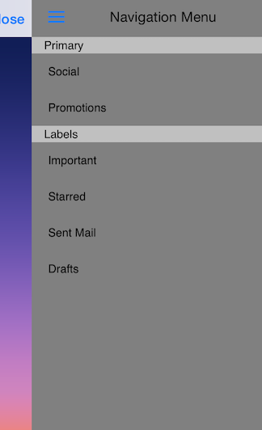

TKSideDrawer: Appearance Positions
TKSideDrawer can be shown from all four sides of the screen.

In order to change the postion of TKSideDrawer, you should set its position property:
Objective-C
self.sideDrawer.position = TKSideDrawerPositionRight;
Swift
self.sideDrawer.position = TKSideDrawerPosition.Right